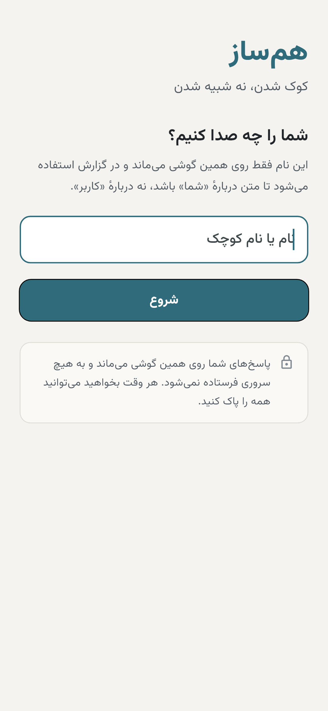
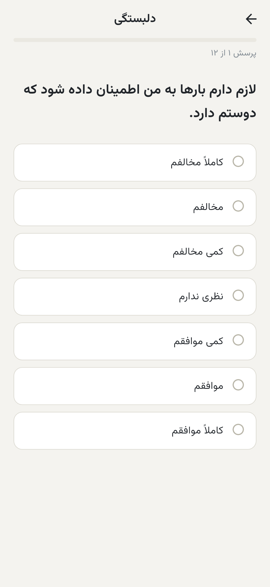
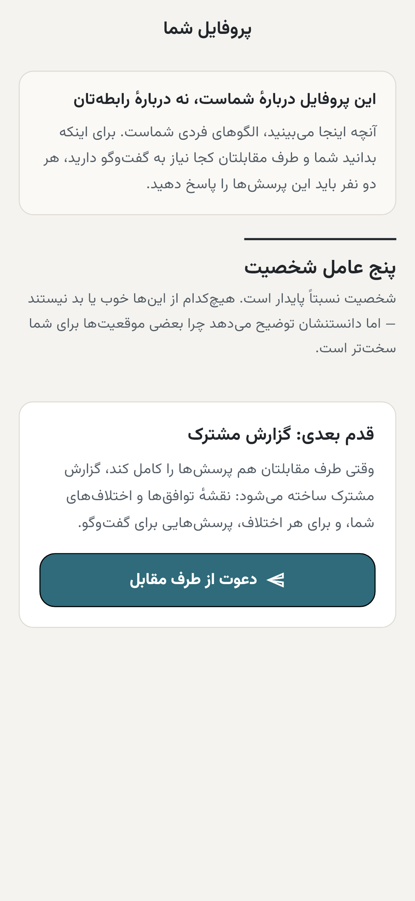
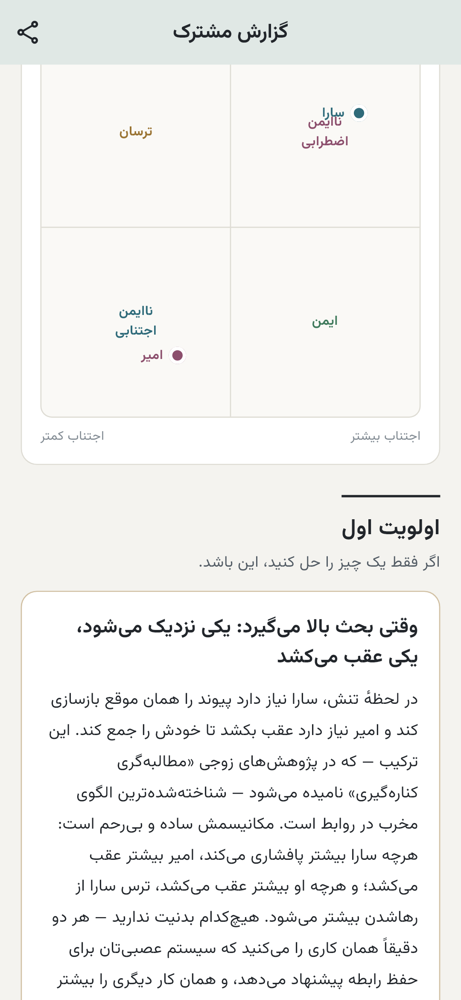
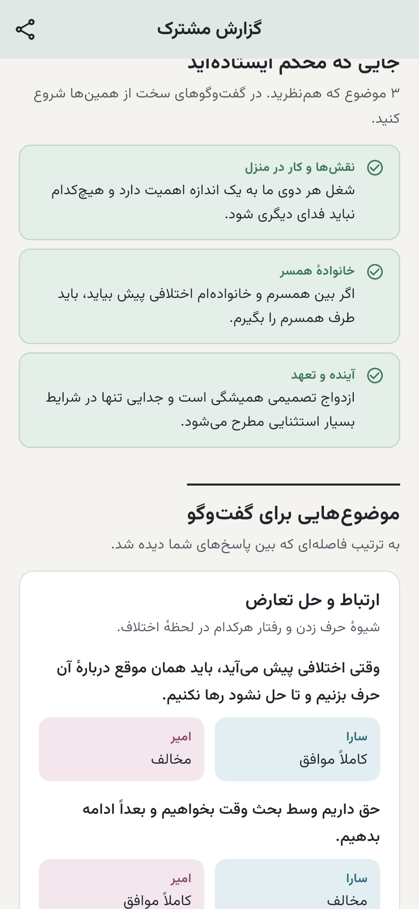
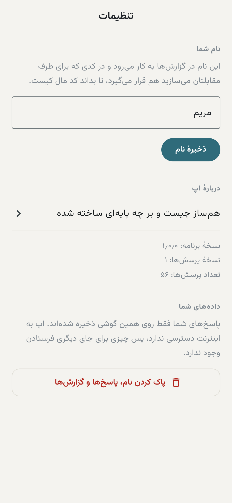

(همساز) — Hamsaz
برای زوجهایی که پیش از ازدواج میخواهند بدانند دربارهٔ چه چیزهایی باید حرف بزنند — و چطور.
دریافت از کافهبازاراندروید ۶ به بالا · حدود ۲۴ مگابایت · پرسشنامهٔ فردی رایگان
هیچ «درصد تناسب» یا نمرهٔ قبولی و ردی در کار نیست.
بزرگترین پژوهش انجامشده در این زمینه (ژوئل و همکاران، ۲۰۲۰ — روی ۱۱٬۱۹۶ زوج) نشان داد شباهت شخصیتی دو نفر عملاً چیزی دربارهٔ آیندهٔ رابطه پیشبینی نمیکند. هر اپلیکیشنی که عددی به شما بدهد، عددی ساخته است.
کجا با هم فاصله دارید، و آن فاصله معمولاً به چه شکلی در زندگی مشترک خودش را نشان میدهد.
بهجای نتیجهگیری، فهرستی از پرسشهایی که بهتر است همین حالا با هم مطرح کنید.
پیش از گزارش مشترک، یک پروفایل فردی از ویژگیهای خودتان میگیرید — نوعی خودشناسی.
گزارش با نام خودتان نوشته میشود، در برنامه بایگانی میشود و میتوانید بهصورت PDF بفرستید.
۵۶ پرسش. بدون حساب کاربری و بدون اینترنت.
انتقال پاسخها فقط از طریق همین کد QR انجام میشود؛ هیچ سروری در میان نیست.
تمام محاسبه داخل خود برنامه انجام میشود.
پرسشها از سه ابزار شناختهشده گرفته شدهاند: صفات شخصیتی، سبک دلبستگی، و هشت حوزهٔ زندگی مشترک:
برنامه اصلاً مجوز اینترنت ندارد. این را میتوانید در فهرست دسترسیهای برنامه در کافهبازار ببینید.
هیچ دادهای جایی ذخیره یا ارسال نمیشود. نه ثبتنام لازم است، نه شمارهٔ موبایل.
دوربین تنها هنگام فشردن دکمهٔ اسکن روشن میشود و هیچ تصویری ذخیره نمیشود. کد را دستی هم میتوانید وارد کنید.
در هر لحظه میتوانید همهٔ پاسخها و گزارشها را از گوشی حذف کنید.






رایگان، بدون محدودیت زمانی.
خرید یکباره از طریق پرداخت درونبرنامهای کافهبازار. اشتراک ماهانهای در کار نیست.
اگر سؤال، اشکال یا پیشنهادی دارید بنویسید: amgroup2301@gmail.com